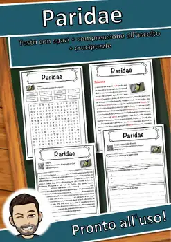
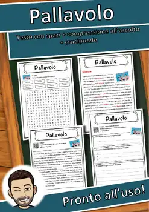
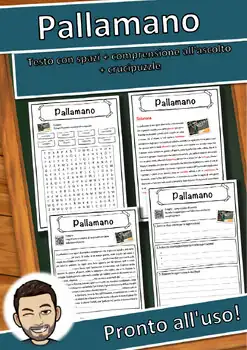
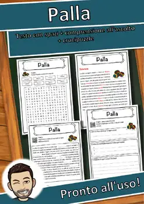
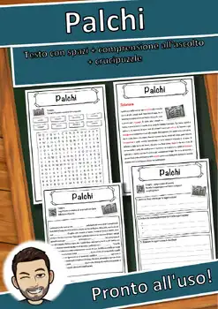
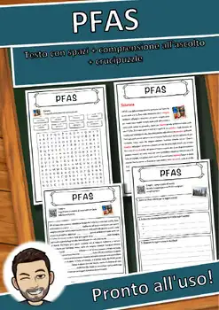
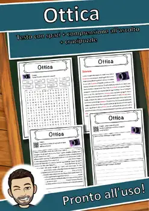
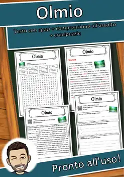
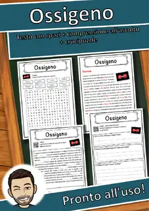
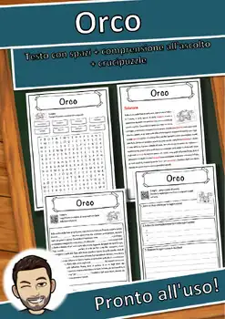

Reading Comprehension Worksheets – 9th Grade
1131 Reading Comprehension Worksheets resources for 9th Grade, ready to print: Paridae, Paranco, Parallelo, Paraguay and more. Each resource page shows the grade range, page count and a preview and links straight to the product on TpT.
1,131 resources

Paridae – Italian Reading Comprehension Worksheet (Scheda): Cloze & Listening

Paranco – Italian Reading Comprehension Worksheet (Scheda): Cloze & Listening

Parallelo – Italian Reading Comprehension Worksheet (Scheda): Cloze & Listening

Paraguay – Italian Reading Comprehension Worksheet (Scheda): Cloze & Listening

Paradiso – Italian Reading Comprehension Worksheet (Scheda): Cloze & Listening

Paracadute – Italian Reading Comprehension Worksheet (Scheda): Cloze & Listening

Pannolino – Italian Reading Comprehension Worksheet (Scheda): Cloze & Listening

Panettiere – Italian Reading Comprehension Worksheet (Scheda): Cloze & Listening

Pane – Italian Reading Comprehension Worksheet (Scheda): Cloze & Listening

Pancake – Italian Reading Comprehension Worksheet (Scheda): Cloze & Listening

Panama – Italian Reading Comprehension Worksheet (Scheda): Cloze & Listening
Pan – Italian Reading Comprehension Worksheet (Scheda): Cloze & Listening

Pampa – Italian Reading Comprehension Worksheet (Scheda): Cloze & Listening

Pallavolo – Italian Reading Comprehension Worksheet (Scheda): Cloze & Listening

Pallamano – Italian Reading Comprehension Worksheet (Scheda): Cloze & Listening

Palla – Italian Reading Comprehension Worksheet (Scheda): Cloze & Listening

Palindromo – Italian Reading Comprehension Worksheet (Scheda): Cloze & Listening

Paleozoico – Italian Reading Comprehension Worksheet (Scheda): Cloze & Listening

Neutralità – Italian Reading Comprehension Worksheet (Scheda): Cloze & Listening

Palchi – Italian Reading Comprehension Worksheet (Scheda): Cloze & Listening

Palau – Italian Reading Comprehension Worksheet (Scheda): Cloze & Listening

Palafitta – Italian Reading Comprehension Worksheet (Scheda): Cloze & Listening
Pakistan – Italian Reading Comprehension Worksheet (Scheda): Cloze & Listening

Pagliaccio – Italian Reading Comprehension Worksheet (Scheda): Cloze & Listening
Paesaggio – Italian Reading Comprehension Worksheet (Scheda): Cloze & Listening

Pace – Italian Reading Comprehension Worksheet (Scheda): Cloze & Listening

PFAS – Italian Reading Comprehension Worksheet (Scheda): Cloze & Listening
Ozono – Italian Reading Comprehension Worksheet (Scheda): Cloze & Listening
Ovis – Italian Reading Comprehension Worksheet (Scheda): Cloze & Listening

Ottica – Italian Reading Comprehension Worksheet (Scheda): Cloze & Listening
Ottawa – Italian Reading Comprehension Worksheet (Scheda): Cloze & Listening
Orchestra – Italian Reading Comprehension Worksheet (Scheda): Cloze & Listening

Olmio – Italian Reading Comprehension Worksheet (Scheda): Cloze & Listening
Osso – Italian Reading Comprehension Worksheet (Scheda): Cloze & Listening

Ossigeno – Italian Reading Comprehension Worksheet (Scheda): Cloze & Listening

Ospedale – Italian Reading Comprehension Worksheet (Scheda): Cloze & Listening

Osmio – Italian Reading Comprehension Worksheet (Scheda): Cloze & Listening
Oscines – Italian Reading Comprehension Worksheet (Scheda): Cloze & Listening

Ortografia – Italian Reading Comprehension Worksheet (Scheda): Cloze & Listening

Orrore – Italian Reading Comprehension Worksheet (Scheda): Cloze & Listening
Orologio – Italian Reading Comprehension Worksheet (Scheda): Cloze & Listening

Oro – Italian Reading Comprehension Worksheet (Scheda): Cloze & Listening
Orizzonte – Italian Reading Comprehension Worksheet (Scheda): Cloze & Listening
Oriente – Italian Reading Comprehension Worksheet (Scheda): Cloze & Listening
Organ – Italian Reading Comprehension Worksheet (Scheda): Cloze & Listening
Orfano – Italian Reading Comprehension Worksheet (Scheda): Cloze & Listening
Orecchio – Italian Reading Comprehension Worksheet (Scheda): Cloze & Listening

Orco – Italian Reading Comprehension Worksheet (Scheda): Cloze & Listening
No resources found – try a different search term or filter.